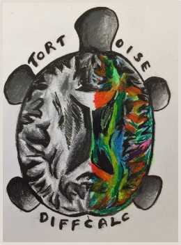

11. Step5: DIFFCALC TENSOR FITTING in TORTOISE VERSION 3.0¶
{kind=link}
If you would like to fit the tensor to your final DIFFPREP processed output, please use the following syntax for conversion: Usage: ConvertNewListfileToOld full_path_new_format_listfile full_path_to_output_listfilename (optional) (The folder should exist.)
The output of the conversion will be a .OF.list, .OF.bmtxt and .OF.path. You can now load the .OF.list file in DIFFCALC. Please follow the following link to get more details about DIFFCALC tensor fitting guide. https://science.nichd.nih.gov/confluence/display/nihpd/DIFF_CALC+Main Please note: You may also convert data from DIFFCALC to new DIFFPREP format using the following command: Usage: ConvertNewListfileToOld full_path_new_format_listfile full_path_to_output_listfilename (optional) (The folder should exist.)
To derive additional DTI parameters that are not currently supported by DIFFCALC30, please perfrom the following steps to derive these metrics using the IDL DIFFCALC.
- Perform a nonlinear tensor fitting of the DMC file in the 3.0 version using the executable from the DIFFCALC30 folder.
- Download DIFFCALC30 from the TORTOISE website. This is an IDL based program that was part of the original released version of TORTOISE, until the current versions have been re-programmed in C++. While certain main features have been incorporated into this current 3.0 version, not all features have been completely migrated.
- Please type DIFFCALC in a command line. Hit enter, then type calcvm. This will open a virtual IDL environment. Click ok.
- A DIFFCALC GUI window will appear. Click the import tensor button and then load the tensor you computed in TORTOISE31.
- then after a coupe of automatic steps in the grey status window, you will be prompted to select a _L0.list file from the same folder where you loaded the tensor. Please click the load raw files button and you will see the newly created _L0.list file.
- Once selected, in a few seconds, you will have to hit the restore button that is on the left hand corner of the GUI.
- You will notice that couple additional buttons will get activated. Please click the computer eigen vectors button.
- After couple steps, the derive tensor button willl get activated. Please click on this button. It will take a few moments before you will see the ROI_utilities button activated.
- Please make sure you have saved this session, by hitting the save_session button. This will create an _L0_SAVE folder with all the derived DTI meterics. These are nii files that are vieweable in any veiwer that supports NII files.
For more details on the DIFFCALC IDL procedures and an explanation about each of these paramters, go to the following website: https://science.nichd.nih.gov/confluence/display/nihpd/DIFF_CALC+Main
Note
The page where you will access information about the DIFFCALC GUI is part of the wiki pages that was setup for the older versions of TORTOISE. It should be used as a reference. The syntax used in the previous versions have been updated for DIFFPREP30 and DRBUDDI30.